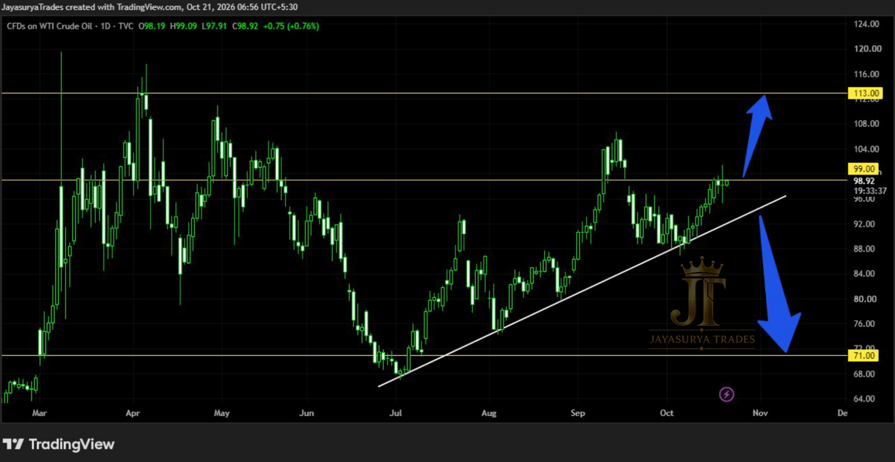

For this Wednesday Market Focus, I am looking at Crude Oil (USOIL). In my previous analysis, I discussed the possibility of price moving toward $99 to fill the gap. Price has now reached that area and the gap-fill scenario has played out. The focus now shifts to how the market reacts around $99.
$99 is the key decision level. My personal expectation leans toward a breakout above this level, followed by a retracement and a possible move toward $113. However, this is only my personal view. The bullish and bearish scenarios both remain in play until price confirms a direction.
Key decision level: $99
Bullish scenario: Daily candle close above $99, followed by a successful retest
Potential upside level: $113 (R1)
Bearish scenario: Candle close below the ascending trendline
Potential downside level: $71 (S1)
Approach: Wait for confirmation before drawing a conclusion.

Market Update — The $99 Gap-Fill Area Has Been Reached
The previous analysis focused on a potential move toward $99 to fill the gap. Price has now reached that area, so the next step is to watch whether buyers can establish a confirmed breakout or whether price rejects the level and weakens.
A level being reached does not automatically confirm the next move. The market needs to show its direction through price action. For this reason, I am watching the $99 level and the ascending trendline rather than assuming the next move in advance.
Key Levels to Monitor
The main decision point is $99. A confirmed move above it could create a bullish continuation scenario, while a confirmed breakdown below the ascending trendline would strengthen the bearish scenario. The chart-marked levels provide the areas to watch if either scenario is confirmed.
Bullish Scenario — Breakout, Retest and Potential Move Toward $113
If Crude Oil breaks above $99 and a daily candle closes above the level, I will then watch for a retest. If price returns to the $99 area and shows a bullish rejection, that would support the possibility of a move toward $113 (R1).
The breakout alone is not the full confirmation in this scenario. The daily close and subsequent retest matter. If price does not hold above $99, the bullish scenario may not develop as expected.
Bearish Scenario — Ascending Trendline Breakdown Toward $71
If price breaks below the ascending trendline and a candle closes below it, the bullish structure would be under pressure. In that case, $71 (S1) becomes the potential downside area to monitor.
Until a breakdown is confirmed, the downside scenario remains conditional. Equally, the market should not be assumed bullish just because price has reached the $99 gap-fill area. Let the price action confirm which scenario is developing.
My Personal View — But Confirmation Comes First
My personal expectation is that Crude Oil may break above $99, retrace to test the level, and then potentially move toward $113. That is my current view, not a confirmed outcome or a guarantee.
I will continue to respect both scenarios. A confirmed daily close above $99 followed by a successful retest would support the bullish case. A confirmed candle close below the ascending trendline would support the bearish case toward $71. Until then, patience is more important than prediction.
Key Takeaways
- Crude Oil has reached the $99 area, completing the gap-fill scenario discussed previously.
- $99 is now the key decision level to watch.
- A daily close above $99 followed by a successful retest could support a move toward $113.
- A confirmed candle close below the ascending trendline could bring $71 into focus.
- My personal view leans bullish, but both scenarios require confirmation.
- Do not treat either scenario as guaranteed; manage risk and follow a defined trading plan.
The main focus for today's Crude Oil analysis is simple: watch how price behaves around $99 and the ascending trendline. The next direction should be assessed from confirmation, not assumption.
Above $99 + successful retest: potential bullish path toward $113.
Below the ascending trendline + candle close: potential bearish path toward $71.
Until confirmation: wait and let the market decide.
One day. One market. One focused analysis.
Levels. Structure. Scenarios. Confirmation.
No hype. Just how the market behaves.
Watch. Wait. Confirm.
Risk Disclaimer
This analysis is provided for educational and informational purposes only and should not be considered financial advice or a recommendation to buy or sell any financial instrument.
Trading involves substantial risk. Always conduct your own research and follow your own trading plan and risk-management rules.